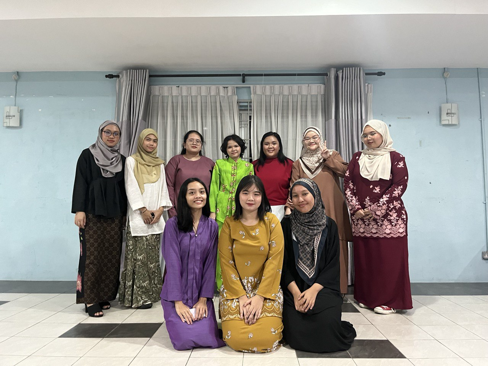
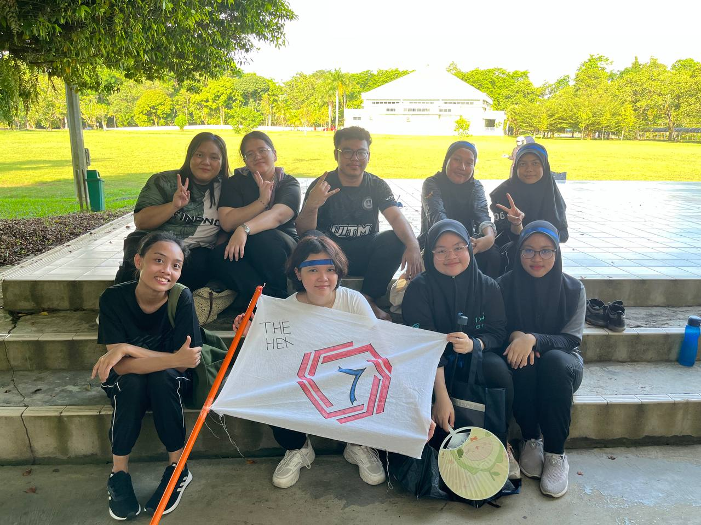
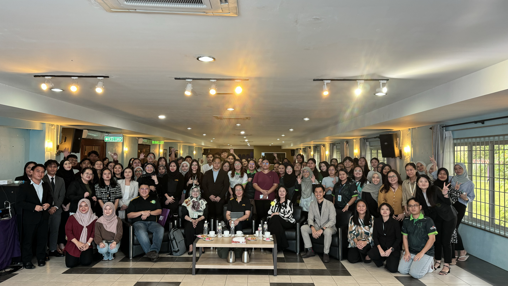

|
 |
 |
It was my first event organised with BAFIN, and my position at the time was a faci. Meeting new juniors was an enjoyable experience that helped them prepare for SGM. Even though there was some conflict, we made it and delivered one of the best performances that night.
Team Building
 |
 |
The second event is Team Building, for which I served as faci and exco for food. That day is memorable because I had a great time playing with the other exco members and juniors. The best part is that, despite the fact that my group was short on members and only had one male, we were able to win the team building competition.
Financial Literacy (Collab Between Unimas and UiTM)
|  |
The third event is Financial Literacy, a collaboration between Unimas and UiTM. The speaker is from Maybank, so in addition to giving the talk, we were taught how to open a Maybank account using their apps. It was a fantastic experience because I was in charge for multimedia, so it was a pleasure to capture the moment when people were having fun.